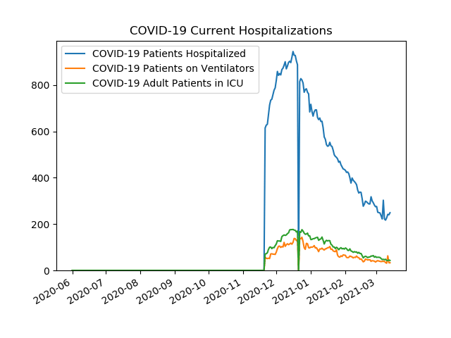
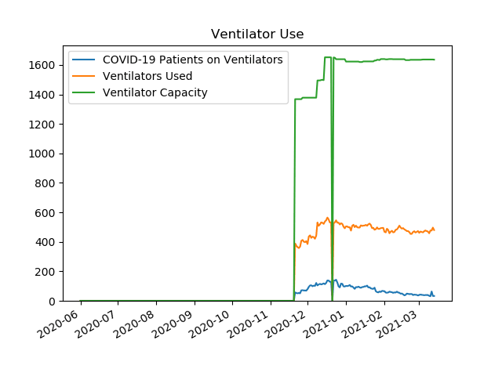
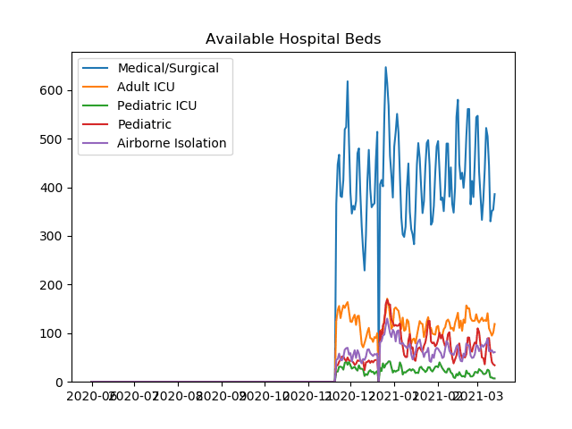
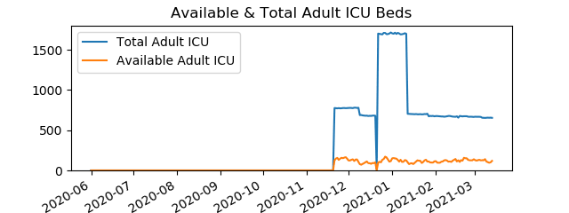
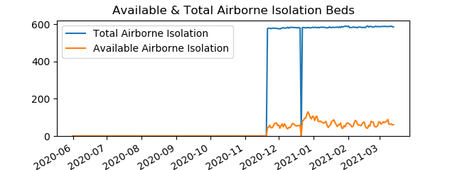
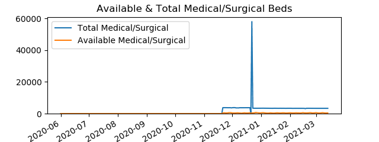
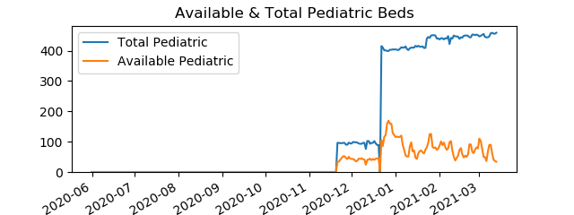

Active COVID-19 Hospitalizations in Philadelphia
Data is from
PA Dept Of Health
COVID-19 Current Hospitalizations
Date
COVID-19 Patients Hospitalized
COVID-19 Patients on Ventilators
COVID-19 Adult Patients in ICU
20201121
615
57
71
20201201
820
79
114
20210101
717
101
133
20210201
432
65
97
20210214
338
48
73

Ventilator Use
Date
COVID-19 Patients on Ventilators
Ventilators Used
Ventilator Capacity
20201121
57
388
1368
20201201
79
385
1378
20210101
101
505
1623
20210201
65
468
1640
20210214
48
497
1639

Available Hospital Beds
Date
Adult ICU
Pediatric
Airborne Isolation
Pediatric ICU
Medical/Surgical
20201121
125
34
45
21
366
20201201
124
43
59
34
389
20210101
150
115
102
23
484
20210201
115
87
68
30
495
20210214
131
54
73
16
545

Available & Total Adult ICU Beds
Date
Available Adult ICU Beds
Total Adult ICU Beds
20201121
125
776
20201201
124
775
20210101
150
1705
20210201
115
676
20210214
131
668

Available & Total Airborne Isolation Beds
Date
Available Airborne Isolation Beds
Total Airborne Isolation Beds
20201121
45
577
20201201
59
578
20210101
102
583
20210201
68
591
20210214
73
584

Available & Total Medical/Surgical Beds
Date
Available Medical/Surgical Beds
Total Medical/Surgical Beds
20201121
366
3735
20201201
389
3705
20210101
484
3408
20210201
495
3345
20210214
545
3344

Available & Total Pediatric Beds
Date
Available Pediatric Beds
Total Pediatric Beds
20201121
34
96
20201201
43
94
20210101
115
404
20210201
87
437
20210214
54
446

Available & Total Pediatric ICU Beds
Date
Available Pediatric ICU Beds
Total Pediatric ICU Beds
20201121
21
253
20201201
34
248
20210101
23
247
20210201
30
250
20210214
16
254